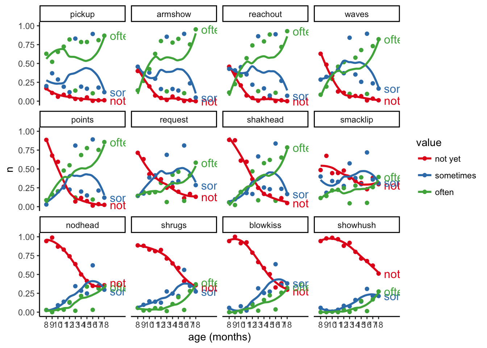
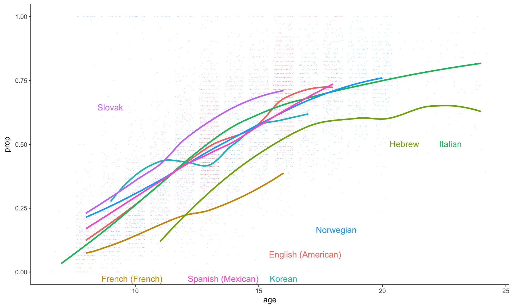
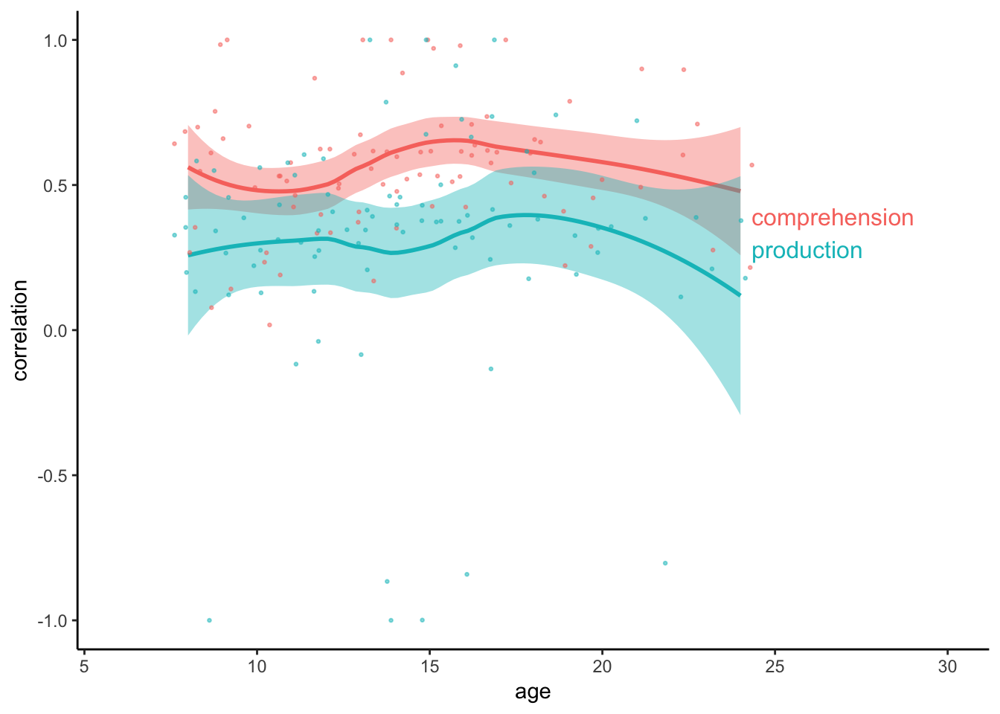
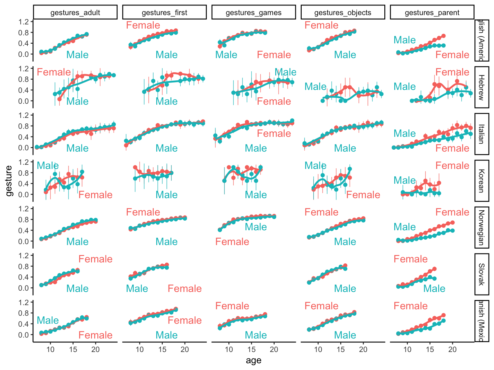
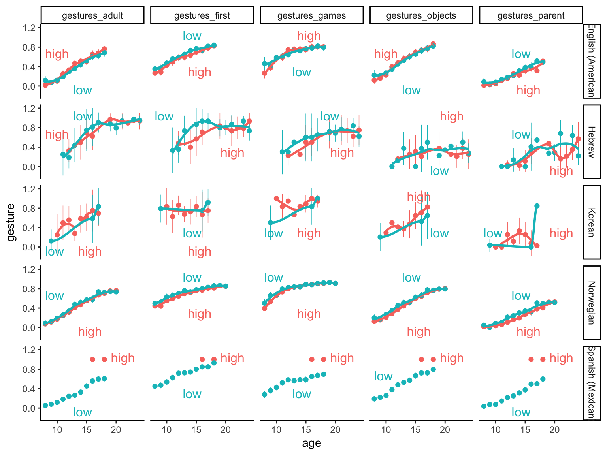
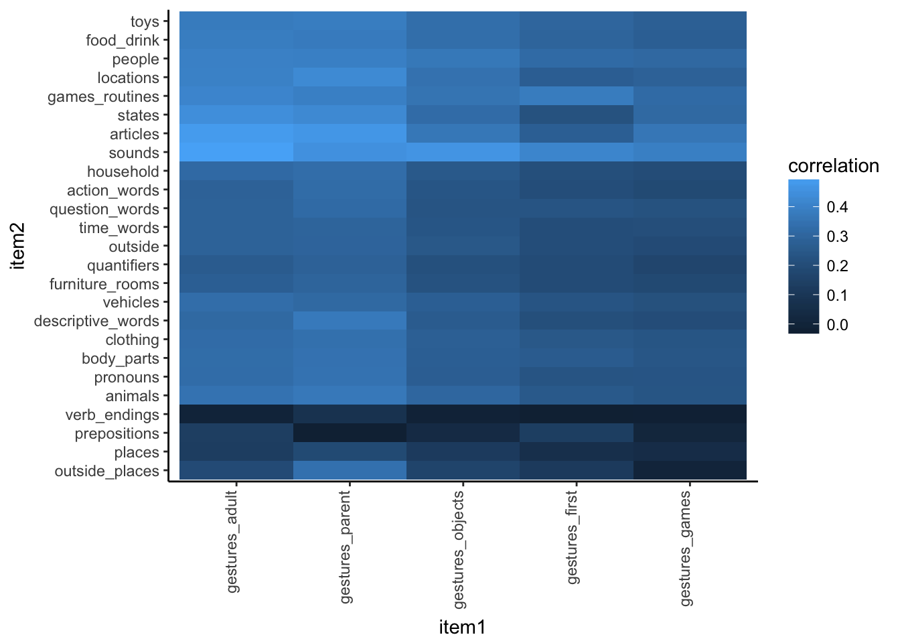
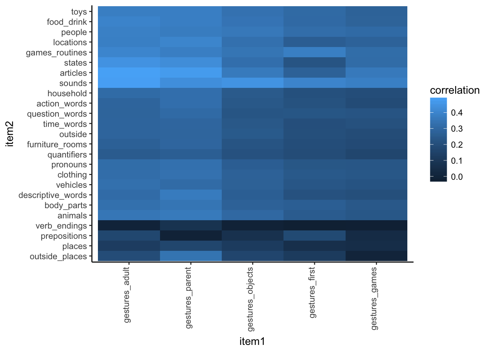

12 Gesture and Communication
This chapter contains analysis of the “early gesture” items from the CDI. Analyses will focus on the cross-linguistic consistency and variability of reporting milestones like first pointing, as well as social routines like waving hi and playing peekaboo.
I can’t tell if sometimes/often really carries very much signal. It looks like it’s all over the place for the earliest gestures and almost overlapping for the latest ones. Let’s try compressing to a binary 
These look pretty reasonable to me, and a lot more stable. Also smacklip doesn’t seem to have much of any kind of trajectory, which makes me think that parents don’t know what do with it. For comparison, let’s try the other gesture categories.

Interesting, ok most of these look like they have some signal (with the exception maybe of sobig). Also some of them don’t look terribly different from the First Gestures.
Let’s try out some basic descriptives. What do these things look like? Let’s arrange them in order of difficulty(on the bases of highest proportion of non-producers).

- Intercorrelation among gestures
| language | mean | sd |
|---|---|---|
| English (American) | 0.6000678 | 0.1127009 |
| French (French) | 0.5604794 | 0.1775693 |
| Hebrew | 0.6047885 | 0.1405877 |
| Italian | 0.6815881 | 0.1035171 |
| Korean | 0.8188162 | 0.1511873 |
| Norwegian | 0.5715328 | 0.1102953 |
| Slovak | 0.6867094 | 0.0800928 |
| Spanish (Mexican) | 0.6684042 | 0.0865157 |
Reproduce intercorrelations among items found in Fenson et al. ~.6 in English and similar cross-linguistically
- Age and gesture
| language | gesture | comprehension | production |
|---|---|---|---|
| English (American) | 0.7341916 | 0.6041555 | 0.4584335 |
| French (French) | 0.5640004 | 0.3123690 | 0.2948552 |
| Hebrew | 0.6611960 | 0.6680370 | 0.6497745 |
| Italian | 0.8154434 | 0.7593678 | 0.6108468 |
| Korean | 0.4306977 | 0.6041926 | 0.4393426 |
| Norwegian | 0.7048041 | 0.7214761 | 0.5448999 |
| Slovak | 0.6605852 | 0.6586217 | 0.4963340 |
| Spanish (Mexican) | 0.7073324 | 0.5518957 | 0.3564280 |
Crosslingusitic plot

Gestures correlates more with comprehension than production
| language | comprehension | production |
|---|---|---|
| English (American) | 0.7498552 | 0.5254578 |
| French (French) | 0.6724663 | 0.3734622 |
| Hebrew | 0.7827125 | 0.6515282 |
| Italian | 0.8122385 | 0.4954399 |
| Korean | 0.4239864 | 0.4507463 |
| Norwegian | 0.6854243 | 0.5004506 |
| Slovak | 0.6273281 | 0.5355441 |
| Spanish (Mexican) | 0.7644320 | 0.5508311 |
This emerges around 12 months
| term | estimate | std.error | statistic |
|---|---|---|---|
| (Intercept) | 0.0005278 | 0.0449721 | 0.0117357 |
| value | 0.2336414 | 0.0453669 | 5.1500353 |
| measureproduction | -0.0009184 | 0.0636237 | -0.0144350 |
| age | -0.0001321 | 0.0031586 | -0.0418127 |
| value:measureproduction | 0.0657739 | 0.0641713 | 1.0249733 |
| value:age | 0.0183420 | 0.0031906 | 5.7487066 |
| measureproduction:age | 0.0001763 | 0.0044683 | 0.0394671 |
| value:measureproduction:age | -0.0142803 | 0.0045106 | -3.1659219 |

Type and sex. Small female advantage overall, but big interaction in gestures_parent 
| term | estimate | std.error | statistic |
|---|---|---|---|
| (Intercept) | 0.0807987 | 0.0391107 | 2.0658966 |
| age | 0.0435041 | 0.0010774 | 40.3789258 |
| sexMale | -0.0100558 | 0.0211243 | -0.4760302 |
| typegestures_games | 0.1546498 | 0.0172123 | 8.9848378 |
| typegestures_objects | -0.4330088 | 0.0166042 | -26.0782398 |
| typegestures_parent | -0.6228262 | 0.0167187 | -37.2532954 |
| typegestures_adult | -0.5530759 | 0.0166467 | -33.2243671 |
| age:sexMale | -0.0022677 | 0.0014785 | -1.5337814 |
| age:typegestures_games | -0.0072611 | 0.0012025 | -6.0384779 |
| age:typegestures_objects | 0.0204767 | 0.0011688 | 17.5194453 |
| age:typegestures_parent | 0.0186084 | 0.0011754 | 15.8311404 |
| age:typegestures_adult | 0.0189543 | 0.0011711 | 16.1844014 |
| sexMale:typegestures_games | -0.0383635 | 0.0238085 | -1.6113358 |
| sexMale:typegestures_objects | 0.0962553 | 0.0230334 | 4.1789413 |
| sexMale:typegestures_parent | 0.2334927 | 0.0232107 | 10.0597088 |
| sexMale:typegestures_adult | 0.0034718 | 0.0230937 | 0.1503341 |
| age:sexMale:typegestures_games | 0.0031577 | 0.0016532 | 1.9101055 |
| age:sexMale:typegestures_objects | -0.0060948 | 0.0016107 | -3.7839235 |
| age:sexMale:typegestures_parent | -0.0243778 | 0.0016211 | -15.0376934 |
| age:sexMale:typegestures_adult | 0.0056528 | 0.0016139 | 3.5026455 |
Type and ses. Very small low-ses advantage? 
| term | estimate | std.error | statistic |
|---|---|---|---|
| (Intercept) | -0.4973253 | 0.0505495 | -9.8383754 |
| age | 0.0641579 | 0.0010538 | 60.8819866 |
| typegestures_first | 0.5846345 | 0.0148311 | 39.4196061 |
| typegestures_games | 0.7389395 | 0.0148464 | 49.7722669 |
| typegestures_objects | 0.1288182 | 0.0148507 | 8.6742027 |
| typegestures_parent | 0.0264002 | 0.0149767 | 1.7627533 |
| seslow | -0.0199830 | 0.0197982 | -1.0093384 |
| age:typegestures_first | -0.0256933 | 0.0009956 | -25.8057644 |
| age:typegestures_games | -0.0295883 | 0.0009963 | -29.6987566 |
| age:typegestures_objects | -0.0054264 | 0.0009966 | -5.4446965 |
| age:typegestures_parent | -0.0170927 | 0.0010032 | -17.0384103 |
| typegestures_first:seslow | 0.0680255 | 0.0068574 | 9.9199968 |
| typegestures_games:seslow | -0.0537759 | 0.0068624 | -7.8363447 |
| typegestures_objects:seslow | 0.0691005 | 0.0068625 | 10.0692827 |
| typegestures_parent:seslow | 0.0948235 | 0.0069070 | 13.7285375 |
| age:seslow | 0.0005274 | 0.0013202 | 0.3994886 |

| term | estimate | std.error | statistic |
|---|---|---|---|
| item2sounds | 0.2073557 | 0.0392836 | 5.2784267 |
| item2games_routines | 0.1761144 | 0.0406737 | 4.3299307 |
| item1gestures_parent | 0.1201681 | 0.0392836 | 3.0589866 |
| item2people | 0.1144024 | 0.0392836 | 2.9122156 |
| (Intercept) | 0.2045406 | 0.0703654 | 2.9068364 |
| item2toys | 0.0951455 | 0.0392836 | 2.4220135 |
| item1gestures_parent:item2prepositions | -0.2749761 | 0.1178509 | -2.3332551 |
| item2food_drink | 0.0894526 | 0.0392836 | 2.2770971 |
| item1gestures_adult | 0.0813975 | 0.0392836 | 2.0720456 |
| item2prepositions | 0.1662381 | 0.0835156 | 1.9905037 |
| item1gestures_parent:item2games_routines | -0.1069076 | 0.0575053 | -1.8590902 |
| item2outside_places | 0.1515186 | 0.0835156 | 1.8142561 |
| item2states | -0.1350388 | 0.0835064 | -1.6171065 |
| item1gestures_parent:item2sounds | -0.0816479 | 0.0555554 | -1.4696661 |
| item2body_parts | 0.0568783 | 0.0392836 | 1.4478892 |
| item2animals | 0.0472402 | 0.0392836 | 1.2025411 |
| item2time_words | -0.0509124 | 0.0424523 | -1.1992852 |
| item1gestures_adult:item2states | 0.1381215 | 0.1178509 | 1.1720023 |
| item1gestures_adult:item2articles | 0.1277112 | 0.1178509 | 1.0836678 |
| item1gestures_objects:item2games_routines | -0.0612488 | 0.0575053 | -1.0650977 |
| item1gestures_objects:item2prepositions | -0.1244907 | 0.1178509 | -1.0563411 |
| item2clothing | 0.0412057 | 0.0392836 | 1.0489276 |
| item2verb_endings | 0.0870872 | 0.0835301 | 1.0425841 |
| item2articles | -0.0829768 | 0.0835064 | -0.9936574 |
| item1gestures_games:item2states | 0.1083385 | 0.1183215 | 0.9156285 |
| item1gestures_games:item2prepositions | -0.1039956 | 0.1183215 | -0.8789243 |
| item1gestures_adult:item2games_routines | -0.0501495 | 0.0575053 | -0.8720849 |
| item1gestures_parent:item2people | -0.0477443 | 0.0555554 | -0.8593992 |
| item1gestures_games:item2articles | 0.1011956 | 0.1183215 | 0.8552593 |
| item1gestures_parent:item2outside_places | 0.1000748 | 0.1178509 | 0.8491645 |
| item1gestures_games:item2outside_places | -0.0973894 | 0.1183215 | -0.8230918 |
| item1gestures_objects | 0.0321189 | 0.0392836 | 0.8176145 |
| item1gestures_adult:item2locations | 0.0459714 | 0.0600067 | 0.7661035 |
| item1gestures_games:item2games_routines | -0.0441793 | 0.0584638 | -0.7556700 |
| item1gestures_parent:item2descriptive_words | 0.0391560 | 0.0555554 | 0.7048103 |
| item1gestures_parent:item2states | 0.0824780 | 0.1178509 | 0.6998506 |
| item1gestures_parent:item2food_drink | -0.0387357 | 0.0555554 | -0.6972441 |
| item1gestures_objects:item2locations | 0.0418332 | 0.0600067 | 0.6971419 |
| item1gestures_adult:item2prepositions | -0.0809512 | 0.1178509 | -0.6868950 |
| item2pronouns | 0.0265637 | 0.0392836 | 0.6762018 |
| item1gestures_parent:item2vehicles | -0.0365341 | 0.0555554 | -0.6576145 |
| item1gestures_parent:item2toys | -0.0356845 | 0.0555554 | -0.6423231 |
| item1gestures_parent:item2body_parts | -0.0355985 | 0.0555554 | -0.6407743 |
| item2vehicles | 0.0250409 | 0.0392836 | 0.6374379 |
| item1gestures_parent:item2articles | 0.0736507 | 0.1178509 | 0.6249485 |
| item2locations | -0.0253079 | 0.0424489 | -0.5961975 |
| item1gestures_parent:item2locations | 0.0353379 | 0.0600067 | 0.5888992 |
| item1gestures_objects:item2states | 0.0691149 | 0.1178509 | 0.5864611 |
| item1gestures_parent:item2question_words | -0.0341254 | 0.0600067 | -0.5686937 |
| item2question_words | -0.0238647 | 0.0424523 | -0.5621549 |
| item1gestures_objects:item2question_words | -0.0331716 | 0.0600067 | -0.5527975 |
| item1gestures_parent:item2quantifiers | -0.0311158 | 0.0575053 | -0.5410940 |
| item1gestures_parent:item2outside | -0.0299726 | 0.0555554 | -0.5395086 |
| item1gestures_adult:item2verb_endings | -0.0622208 | 0.1178509 | -0.5279626 |
| item1gestures_parent:item2time_words | -0.0307269 | 0.0600067 | -0.5120578 |
| item1gestures_parent:item2clothing | -0.0272120 | 0.0555554 | -0.4898173 |
| item1gestures_objects:item2articles | 0.0544746 | 0.1178509 | 0.4622331 |
| item2sounds:measureproduces | -0.0240223 | 0.0555554 | -0.4324022 |
| item1gestures_adult:item2question_words | -0.0253805 | 0.0600067 | -0.4229608 |
| item1gestures_games | -0.0169491 | 0.0406737 | -0.4167096 |
| item1gestures_adult:item2household | 0.0226742 | 0.0555554 | 0.4081369 |
| item1gestures_parent:item2furniture_rooms | -0.0223572 | 0.0555554 | -0.4024299 |
| item1gestures_adult:item2descriptive_words | 0.0205306 | 0.0555554 | 0.3695509 |
| item1gestures_objects:item2body_parts | -0.0202055 | 0.0555554 | -0.3636994 |
| item1gestures_adult:item2vehicles | 0.0191919 | 0.0555554 | 0.3454548 |
| item1gestures_objects:item2animals | 0.0191634 | 0.0555554 | 0.3449428 |
| item1gestures_objects:item2sounds | 0.0189859 | 0.0555554 | 0.3417465 |
| item1gestures_games:item2time_words | 0.0206834 | 0.0609258 | 0.3394847 |
| item1gestures_objects:item2descriptive_words | 0.0187015 | 0.0555554 | 0.3366285 |
| item1gestures_games:item2pronouns | 0.0189593 | 0.0575053 | 0.3296961 |
| item2locations:measureproduces | -0.0187204 | 0.0600067 | -0.3119721 |
| item2prepositions:measureproduces | 0.0365309 | 0.1178509 | 0.3099758 |
| item1gestures_adult:item2animals | 0.0162955 | 0.0555554 | 0.2933204 |
| item1gestures_objects:item2places | 0.0250151 | 0.0878408 | 0.2847777 |
| item1gestures_adult:item2quantifiers | -0.0159797 | 0.0575053 | -0.2778828 |
| measureproduces | 0.0105723 | 0.0392836 | 0.2691269 |
| item1gestures_adult:item2body_parts | -0.0148680 | 0.0555554 | -0.2676247 |
| item2quantifiers:measureproduces | -0.0144564 | 0.0575053 | -0.2513923 |
| item1gestures_objects:item2people | 0.0134925 | 0.0555554 | 0.2428653 |
| item1gestures_adult:item2pronouns | 0.0132207 | 0.0555554 | 0.2379725 |
| item2clothing:measureproduces | -0.0126681 | 0.0555554 | -0.2280261 |
| item1gestures_objects:item2vehicles | 0.0124825 | 0.0555554 | 0.2246862 |
| item2question_words:measureproduces | -0.0130782 | 0.0600067 | -0.2179454 |
| item2time_words:measureproduces | -0.0127555 | 0.0600067 | -0.2125674 |
| item2household:measureproduces | -0.0116115 | 0.0555554 | -0.2090083 |
| item2games_routines:measureproduces | -0.0118325 | 0.0575053 | -0.2057644 |
| item1gestures_objects:item2quantifiers | -0.0118069 | 0.0575053 | -0.2053177 |
| item1gestures_games:item2locations | 0.0127924 | 0.0625856 | 0.2043987 |
| item2furniture_rooms | -0.0078373 | 0.0392836 | -0.1995059 |
| item2people:measureproduces | -0.0110734 | 0.0555554 | -0.1993221 |
| item1gestures_parent:measureproduces | -0.0109379 | 0.0555554 | -0.1968831 |
| item1gestures_games:item2quantifiers | -0.0110315 | 0.0584638 | -0.1886898 |
| item2descriptive_words | 0.0072144 | 0.0392836 | 0.1836502 |
| item1gestures_parent:item2verb_endings | -0.0210903 | 0.1178509 | -0.1789575 |
| item1gestures_adult:measureproduces | -0.0097888 | 0.0555554 | -0.1761979 |
| item2quantifiers | -0.0071148 | 0.0406737 | -0.1749244 |
| item2household | 0.0068488 | 0.0392836 | 0.1743428 |
| item1gestures_adult:item2food_drink | 0.0096611 | 0.0555554 | 0.1739006 |
| item2furniture_rooms:measureproduces | -0.0095279 | 0.0555554 | -0.1715032 |
| item1gestures_objects:item2outside | 0.0092992 | 0.0555554 | 0.1673854 |
| item2outside:measureproduces | -0.0092930 | 0.0555554 | -0.1672741 |
| item1gestures_objects:item2verb_endings | -0.0192995 | 0.1178509 | -0.1637623 |
| item1gestures_objects:measureproduces | -0.0088842 | 0.0555554 | -0.1599151 |
| item1gestures_games:item2verb_endings | 0.0189163 | 0.1183215 | 0.1598719 |
| item2animals:measureproduces | -0.0087527 | 0.0555554 | -0.1575484 |
| item2pronouns:measureproduces | -0.0085468 | 0.0555554 | -0.1538420 |
| item2vehicles:measureproduces | -0.0085059 | 0.0555554 | -0.1531064 |
| item1gestures_games:item2people | 0.0087694 | 0.0575053 | 0.1524968 |
| item1gestures_adult:item2places | -0.0133217 | 0.0878408 | -0.1516569 |
| item2descriptive_words:measureproduces | -0.0081528 | 0.0555554 | -0.1467509 |
| item1gestures_objects:item2time_words:measureproduces | 0.0121125 | 0.0848623 | 0.1427313 |
| item2body_parts:measureproduces | -0.0078571 | 0.0555554 | -0.1414287 |
| item1gestures_parent:item2prepositions:measureproduces | -0.0231605 | 0.1666663 | -0.1389635 |
| item1gestures_parent:item2people:measureproduces | -0.0109140 | 0.0785672 | -0.1389130 |
| item1gestures_parent:item2pronouns:measureproduces | -0.0108090 | 0.0785672 | -0.1375765 |
| item1gestures_objects:item2household | 0.0075368 | 0.0555554 | 0.1356628 |
| item1gestures_objects:item2clothing:measureproduces | 0.0103353 | 0.0785672 | 0.1315476 |
| item1gestures_games:item2time_words:measureproduces | 0.0112240 | 0.0861514 | 0.1302818 |
| item1gestures_objects:item2food_drink | 0.0071121 | 0.0555554 | 0.1280182 |
| item1gestures_parent:item2time_words:measureproduces | 0.0108137 | 0.0848623 | 0.1274259 |
| item1gestures_games:item2locations:measureproduces | 0.0111332 | 0.0885076 | 0.1257876 |
| item1gestures_adult:item2time_words:measureproduces | 0.0103382 | 0.0848623 | 0.1218233 |
| item1gestures_objects:item2pronouns | 0.0066458 | 0.0555554 | 0.1196241 |
| item2places:measureproduces | -0.0105037 | 0.0878408 | -0.1195763 |
| item1gestures_games:item2outside | 0.0067648 | 0.0575053 | 0.1176376 |
| item1gestures_games:measureproduces | -0.0067435 | 0.0575053 | -0.1172669 |
| item1gestures_games:item2clothing | 0.0066884 | 0.0575053 | 0.1163096 |
| item1gestures_games:item2question_words | 0.0070586 | 0.0609258 | 0.1158553 |
| item1gestures_objects:item2quantifiers:measureproduces | 0.0094089 | 0.0813248 | 0.1156950 |
| item1gestures_games:item2question_words:measureproduces | 0.0099358 | 0.0861514 | 0.1153298 |
| item1gestures_adult:item2clothing:measureproduces | 0.0090081 | 0.0785672 | 0.1146549 |
| item1gestures_games:item2clothing:measureproduces | 0.0092028 | 0.0813248 | 0.1131608 |
| item1gestures_games:item2toys | -0.0064813 | 0.0575053 | -0.1127076 |
| item1gestures_objects:item2outside_places | 0.0130583 | 0.1178509 | 0.1108039 |
| item1gestures_games:item2descriptive_words | 0.0063220 | 0.0575053 | 0.1099373 |
| item1gestures_objects:item2descriptive_words:measureproduces | 0.0085426 | 0.0785672 | 0.1087297 |
| item1gestures_games:item2sounds:measureproduces | 0.0087869 | 0.0813248 | 0.1080469 |
| item1gestures_adult:item2question_words:measureproduces | 0.0091404 | 0.0848623 | 0.1077081 |
| item1gestures_games:item2body_parts | -0.0057808 | 0.0575053 | -0.1005258 |
| item1gestures_adult:item2sounds | 0.0055611 | 0.0555554 | 0.1001008 |
| item1gestures_games:item2vehicles:measureproduces | 0.0081231 | 0.0813248 | 0.0998845 |
| item1gestures_objects:item2furniture_rooms:measureproduces | 0.0078157 | 0.0785672 | 0.0994780 |
| item1gestures_games:item2furniture_rooms | 0.0056970 | 0.0575053 | 0.0990696 |
| item1gestures_adult:item2furniture_rooms:measureproduces | 0.0077779 | 0.0785672 | 0.0989962 |
| item1gestures_objects:item2body_parts:measureproduces | 0.0077764 | 0.0785672 | 0.0989778 |
| item1gestures_adult:item2outside:measureproduces | 0.0077551 | 0.0785672 | 0.0987065 |
| item1gestures_parent:item2household:measureproduces | 0.0076318 | 0.0785672 | 0.0971369 |
| item2outside_places:measureproduces | -0.0113585 | 0.1178509 | -0.0963801 |
| item1gestures_games:item2vehicles | 0.0055229 | 0.0575053 | 0.0960415 |
| item1gestures_adult:item2body_parts:measureproduces | 0.0074713 | 0.0785672 | 0.0950943 |
| item1gestures_parent:item2clothing:measureproduces | 0.0074512 | 0.0785672 | 0.0948380 |
| item1gestures_parent:item2animals | -0.0051360 | 0.0555554 | -0.0924489 |
| item1gestures_games:item2household:measureproduces | 0.0074164 | 0.0813248 | 0.0911946 |
| item1gestures_games:item2furniture_rooms:measureproduces | 0.0073767 | 0.0813248 | 0.0907069 |
| item1gestures_objects:item2outside:measureproduces | 0.0071166 | 0.0785672 | 0.0905802 |
| item1gestures_games:item2quantifiers:measureproduces | 0.0074805 | 0.0826691 | 0.0904873 |
| item1gestures_objects:item2vehicles:measureproduces | 0.0071012 | 0.0785672 | 0.0903835 |
| item2articles:measureproduces | -0.0105723 | 0.1178509 | -0.0897090 |
| item2verb_endings:measureproduces | -0.0105723 | 0.1178509 | -0.0897090 |
| item2states:measureproduces | -0.0105723 | 0.1178509 | -0.0897090 |
| item1gestures_adult:item2descriptive_words:measureproduces | 0.0068580 | 0.0785672 | 0.0872882 |
| item1gestures_objects:item2question_words:measureproduces | 0.0073463 | 0.0848623 | 0.0865672 |
| item1gestures_parent:item2furniture_rooms:measureproduces | 0.0067882 | 0.0785672 | 0.0863996 |
| item1gestures_adult:item2animals:measureproduces | 0.0067385 | 0.0785672 | 0.0857672 |
| item1gestures_parent:item2body_parts:measureproduces | 0.0067335 | 0.0785672 | 0.0857034 |
| item1gestures_parent:item2places:measureproduces | -0.0105600 | 0.1242257 | -0.0850066 |
| item1gestures_games:item2household | 0.0048833 | 0.0575053 | 0.0849194 |
| item1gestures_parent:item2locations:measureproduces | -0.0071968 | 0.0848623 | -0.0848056 |
| item1gestures_parent:item2vehicles:measureproduces | 0.0066269 | 0.0785672 | 0.0843465 |
| item1gestures_games:item2descriptive_words:measureproduces | 0.0068454 | 0.0813248 | 0.0841734 |
| item1gestures_games:item2games_routines:measureproduces | 0.0069549 | 0.0826691 | 0.0841297 |
| item1gestures_adult:item2toys | -0.0045231 | 0.0555554 | -0.0814162 |
| item1gestures_objects:item2furniture_rooms | -0.0044167 | 0.0555554 | -0.0795016 |
| item1gestures_games:item2outside:measureproduces | 0.0063954 | 0.0813248 | 0.0786398 |
| item1gestures_parent:item2outside:measureproduces | 0.0061689 | 0.0785672 | 0.0785171 |
| item1gestures_games:item2people:measureproduces | 0.0063526 | 0.0813248 | 0.0781137 |
| item1gestures_objects:item2animals:measureproduces | 0.0060797 | 0.0785672 | 0.0773825 |
| item1gestures_adult:item2clothing | -0.0042077 | 0.0555554 | -0.0757387 |
| item1gestures_objects:item2food_drink:measureproduces | 0.0059370 | 0.0785672 | 0.0755655 |
| item1gestures_adult:item2vehicles:measureproduces | 0.0058954 | 0.0785672 | 0.0750358 |
| item1gestures_adult:item2household:measureproduces | 0.0057989 | 0.0785672 | 0.0738081 |
| item1gestures_adult:item2furniture_rooms | -0.0040993 | 0.0555554 | -0.0737884 |
| item1gestures_objects:item2places:measureproduces | 0.0090897 | 0.1242257 | 0.0731710 |
| item1gestures_adult:item2outside_places | -0.0085726 | 0.1178509 | -0.0727411 |
| item1gestures_objects:item2household:measureproduces | 0.0056885 | 0.0785672 | 0.0724031 |
| item2places | -0.0044762 | 0.0622210 | -0.0719400 |
| item1gestures_adult:item2outside | 0.0039820 | 0.0555554 | 0.0716763 |
| item1gestures_games:item2animals:measureproduces | 0.0057917 | 0.0813248 | 0.0712170 |
| item1gestures_adult:item2people | -0.0038958 | 0.0555554 | -0.0701252 |
| item1gestures_adult:item2food_drink:measureproduces | 0.0054558 | 0.0785672 | 0.0694412 |
| item1gestures_adult:item2quantifiers:measureproduces | 0.0054009 | 0.0813248 | 0.0664112 |
| item1gestures_parent:item2outside_places:measureproduces | 0.0110397 | 0.1666663 | 0.0662382 |
| item1gestures_games:item2prepositions:measureproduces | -0.0110187 | 0.1673264 | -0.0658516 |
| item1gestures_parent:item2articles:measureproduces | 0.0109379 | 0.1666663 | 0.0656277 |
| item1gestures_parent:item2verb_endings:measureproduces | 0.0109379 | 0.1666663 | 0.0656277 |
| item1gestures_parent:item2states:measureproduces | 0.0109379 | 0.1666663 | 0.0656277 |
| item2toys:measureproduces | -0.0035507 | 0.0555554 | -0.0639128 |
| item1gestures_games:item2body_parts:measureproduces | 0.0051181 | 0.0813248 | 0.0629343 |
| item1gestures_adult:item2sounds:measureproduces | 0.0048983 | 0.0785672 | 0.0623451 |
| item1gestures_games:item2places:measureproduces | 0.0075477 | 0.1251099 | 0.0603284 |
| item1gestures_adult:item2outside_places:measureproduces | 0.0099531 | 0.1666663 | 0.0597190 |
| item1gestures_adult:item2articles:measureproduces | 0.0097888 | 0.1666663 | 0.0587326 |
| item1gestures_adult:item2verb_endings:measureproduces | 0.0097888 | 0.1666663 | 0.0587326 |
| item1gestures_adult:item2states:measureproduces | 0.0097888 | 0.1666663 | 0.0587326 |
| item1gestures_games:item2sounds | -0.0033366 | 0.0575053 | -0.0580233 |
| item1gestures_parent:item2quantifiers:measureproduces | -0.0046659 | 0.0813248 | -0.0573732 |
| item1gestures_parent:item2household | -0.0031280 | 0.0555554 | -0.0563034 |
| item1gestures_objects:item2sounds:measureproduces | 0.0043746 | 0.0785672 | 0.0556795 |
| item1gestures_objects:item2toys:measureproduces | 0.0043198 | 0.0785672 | 0.0549820 |
| item1gestures_parent:item2sounds:measureproduces | 0.0042284 | 0.0785672 | 0.0538190 |
| item1gestures_objects:item2outside_places:measureproduces | 0.0089548 | 0.1666663 | 0.0537287 |
| item1gestures_objects:item2articles:measureproduces | 0.0088842 | 0.1666663 | 0.0533050 |
| item1gestures_objects:item2verb_endings:measureproduces | 0.0088842 | 0.1666663 | 0.0533050 |
| item1gestures_objects:item2states:measureproduces | 0.0088842 | 0.1666663 | 0.0533050 |
| item1gestures_games:item2food_drink | -0.0029605 | 0.0575053 | -0.0514816 |
| item1gestures_parent:item2games_routines:measureproduces | -0.0040097 | 0.0813248 | -0.0493047 |
| item1gestures_parent:item2pronouns | -0.0026301 | 0.0555554 | -0.0473420 |
| item1gestures_games:item2places | 0.0041504 | 0.0884713 | 0.0469122 |
| item1gestures_games:item2food_drink:measureproduces | 0.0037823 | 0.0813248 | 0.0465082 |
| item1gestures_parent:item2descriptive_words:measureproduces | 0.0036298 | 0.0785672 | 0.0462005 |
| item1gestures_parent:item2question_words:measureproduces | 0.0038277 | 0.0848623 | 0.0451044 |
| item1gestures_games:item2outside_places:measureproduces | 0.0069886 | 0.1673264 | 0.0417662 |
| item1gestures_games:item2articles:measureproduces | 0.0067435 | 0.1673264 | 0.0403013 |
| item1gestures_games:item2verb_endings:measureproduces | 0.0067435 | 0.1673264 | 0.0403013 |
| item1gestures_games:item2states:measureproduces | 0.0067435 | 0.1673264 | 0.0403013 |
| item1gestures_objects:item2prepositions:measureproduces | -0.0066955 | 0.1666663 | -0.0401729 |
| item1gestures_games:item2toys:measureproduces | 0.0032228 | 0.0813248 | 0.0396286 |
| item1gestures_games:item2pronouns:measureproduces | 0.0030568 | 0.0813248 | 0.0375870 |
| item1gestures_adult:item2time_words | 0.0021135 | 0.0600067 | 0.0352218 |
| item1gestures_parent:item2animals:measureproduces | 0.0026631 | 0.0785672 | 0.0338962 |
| item1gestures_adult:item2places:measureproduces | 0.0040999 | 0.1242257 | 0.0330034 |
| item1gestures_parent:item2places | 0.0028639 | 0.0878408 | 0.0326033 |
| item1gestures_parent:item2toys:measureproduces | -0.0024289 | 0.0785672 | -0.0309154 |
| item2outside | -0.0011096 | 0.0392836 | -0.0282458 |
| item2food_drink:measureproduces | 0.0014463 | 0.0555554 | 0.0260332 |
| item1gestures_adult:item2toys:measureproduces | 0.0019520 | 0.0785672 | 0.0248446 |
| item1gestures_objects:item2games_routines:measureproduces | 0.0020128 | 0.0813248 | 0.0247504 |
| item1gestures_adult:item2people:measureproduces | -0.0019406 | 0.0785672 | -0.0246999 |
| item1gestures_adult:item2prepositions:measureproduces | -0.0032412 | 0.1666663 | -0.0194472 |
| item1gestures_games:item2animals | -0.0010072 | 0.0575053 | -0.0175146 |
| item1gestures_objects:item2locations:measureproduces | 0.0014381 | 0.0848623 | 0.0169467 |
| item1gestures_adult:item2games_routines:measureproduces | 0.0013517 | 0.0813248 | 0.0166205 |
| item1gestures_objects:item2toys | 0.0008440 | 0.0555554 | 0.0151926 |
| item1gestures_objects:item2time_words | -0.0008365 | 0.0600067 | -0.0139396 |
| item1gestures_parent:item2food_drink:measureproduces | 0.0010805 | 0.0785672 | 0.0137526 |
| item1gestures_objects:item2clothing | -0.0007424 | 0.0555554 | -0.0133641 |
| item1gestures_adult:item2locations:measureproduces | -0.0010317 | 0.0848623 | -0.0121571 |
| item1gestures_objects:item2pronouns:measureproduces | -0.0006960 | 0.0785672 | -0.0088587 |
| item1gestures_objects:item2people:measureproduces | 0.0004779 | 0.0785672 | 0.0060824 |
| item1gestures_adult:item2pronouns:measureproduces | -0.0001145 | 0.0785672 | -0.0014567 |